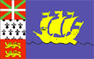
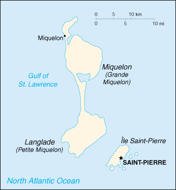

{kind=link}


| Saint Pierre and Miquelon |
 |
|
|  | |
| Introduction |
Background: First settled by the French in the early 17th century, the islands represent the sole remaining vestige of France's once vast North American possessions.
| Geography |
Location: Northern North America, islands in the North Atlantic Ocean, south of Newfoundland (Canada)
Geographic coordinates: 46 50 N, 56 20 W
Map references: North America
Area:
total:
242 sq km
land:
242 sq km
water:
0 sq km
note:
includes eight small islands in the Saint Pierre and the Miquelon groups
Area - comparative: 1.5 times the size of Washington, DC
Land boundaries: 0 km
Coastline: 120 km
Maritime claims:
exclusive economic zone:
200 nm
territorial sea:
12 nm
Climate: cold and wet, with much mist and fog; spring and autumn are windy
Terrain: mostly barren rock
Elevation extremes:
lowest point:
Atlantic Ocean 0 m
highest point:
Morne de la Grande Montagne 240 m
Natural resources: fish, deepwater ports
Land use:
arable land:
13%
permanent crops:
0%
permanent pastures:
0%
forests and woodland:
4%
other:
83% (1993 est.)
Irrigated land: NA sq km
Natural hazards: persistent fog throughout the year can be a maritime hazard
Environment - current issues: NA
Geography - note: vegetation scanty
| People |
Population: 6,896 (July 2000 est.)
Age structure:
0-14 years:
26.19% (male 924; female 882)
15-64 years:
64.01% (male 2,254; female 2,160)
65 years and over:
9.8% (male 286; female 390) (2000 est.)
Population growth rate: 0.49% (2000 est.)
Birth rate: 16.53 births/1,000 population (2000 est.)
Death rate: 6.67 deaths/1,000 population (2000 est.)
Net migration rate: -4.93 migrant(s)/1,000 population (2000 est.)
Sex ratio:
at birth:
1.04 male(s)/female
under 15 years:
1.05 male(s)/female
15-64 years:
1.04 male(s)/female
65 years and over:
0.73 male(s)/female
total population:
1.01 male(s)/female (2000 est.)
Infant mortality rate: 8.61 deaths/1,000 live births (2000 est.)
Life expectancy at birth:
total population:
77.6 years
male:
75.36 years
female:
79.95 years (2000 est.)
Total fertility rate: 2.14 children born/woman (2000 est.)
Nationality:
noun:
Frenchman(men), Frenchwoman(women)
adjective:
French
Ethnic groups: Basques and Bretons (French fishermen)
Religions: Roman Catholic 99%
Languages: French
Literacy:
definition:
age 15 and over can read and write
total population:
99%
male:
99%
female:
99% (1982 est.)
| Government |
Country name:
conventional long form:
Territorial Collectivity of Saint Pierre and Miquelon
conventional short form:
Saint Pierre and Miquelon
local long form:
Departement de Saint-Pierre et Miquelon
local short form:
Saint-Pierre et Miquelon
Data code: SB
Dependency status: self-governing territorial collectivity of France
Government type: NA
Capital: Saint-Pierre
Administrative divisions:
none (territorial collectivity of France)
note:
there are no first-order administrative divisions approved by the US Government, but there are two communes - Saint Pierre, Miquelon
Independence: none (territorial collectivity of France; has been under French control since 1763)
National holiday: National Day, Taking of the Bastille, 14 July (1789)
Constitution: 28 September 1958 (French Constitution)
Legal system: French law with special adaptations for local conditions, such as housing and taxation
Suffrage: 18 years of age; universal
Executive branch:
chief of state:
President Jacques CHIRAC of France (since 17 May 1995), represented by Prefect Remi THUAU (since NA)
head of government:
President of the General Council Bernard LE SOAVEC (since NA 1996)
cabinet:
NA
elections:
French president elected by popular vote for a seven-year term; prefect appointed by the French president on the advice of the French Ministry of Interior; president of the General Council is elected by the members of the council
Legislative branch:
unicameral General Council or Conseil General (19 seats - 15 from Saint Pierre and 4 from Miquelon; members are elected by popular vote to serve six-year terms)
elections:
elections last held 20 March 1994 (next to be held NA April 2000)
election results:
percent of vote by party - NA; seats by party - RPR 15, other 4
note:
Saint Pierre and Miquelon elect 1 seat to the French Senate; elections last held NA September 1995 (next to be held NA September 2004); results - percent of vote by party - NA; seats by party - RPR 1; Saint Pierre and Miquelon also elects 1 seat to the French National Assembly; elections last held 25 May-1 June 1997 (next to be held NA 2002); results - percent of vote by party - NA; seats by party - UDF 1
Judicial branch: Superior Tribunal of Appeals or Tribunal Superieur d'Appel
Political parties and leaders: Rassemblement pour la Republique or RPR [leader NA]; Socialist Party or PS [leader NA]; Union pour la Democratie Francaise or UDF [leader NA]
International organization participation: FZ, WFTU
Diplomatic representation in the US: none (territorial collectivity of France)
Diplomatic representation from the US: none (territorial collectivity of France)
Flag description: a yellow sailing ship facing the hoist side rides on a dark blue background with a black wave line under the ship; on the hoist side, a vertical band is divided into three parts: the top part is red with a green diagonal cross extending to the corners overlaid by a white cross dividing the square into four sections; the middle part has a white background with an ermine pattern; the third part has a red background with two stylized yellow lions outlined in black, one on top of the other; the flag of France is used for official occasions
| Economy |
Economy - overview: The inhabitants have traditionally earned their livelihood by fishing and by servicing fishing fleets operating off the coast of Newfoundland. The economy has been declining, however, because of disputes with Canada over fishing quotas and a steady decline in the number of ships stopping at Saint Pierre. In 1992, an arbitration panel awarded the islands an exclusive economic zone of 12,348 sq km to settle a longstanding territorial dispute with Canada, although it represents only 25% of what France had sought. The islands are heavily subsidized by France to the great betterment of living standards. The government hopes an expansion of tourism will boost economic prospects.
GDP: purchasing power parity - $74 million (1996 est.); supplemented by annual payments from France of about $65 million
GDP - real growth rate: NA%
GDP - per capita: purchasing power parity - $11,000 (1996 est.)
GDP - composition by sector:
agriculture:
NA%
industry:
NA%
services:
NA%
Population below poverty line: NA%
Household income or consumption by percentage share:
lowest 10%:
NA%
highest 10%:
NA%
Inflation rate (consumer prices): 2.1% (1991-96 average)
Labor force: 3,000 (1997)
Labor force - by occupation: fishing 18%, industry (mainly fish-processing) 41%, services 41% (1996 est.)
Unemployment rate: 9.8% (1997)
Budget:
revenues:
$70 million
expenditures:
$60 million, including capital expenditures of $24 million (1996 est.)
Industries: fish processing and supply base for fishing fleets; tourism
Industrial production growth rate: NA%
Electricity - production: 40 million kWh (1998)
Electricity - production by source:
fossil fuel:
100%
hydro:
0%
nuclear:
0%
other:
0% (1998)
Electricity - consumption: 37 million kWh (1998)
Electricity - exports: 0 kWh (1998)
Electricity - imports: 0 kWh (1998)
Agriculture - products: vegetables; poultry, cattle, sheep, pigs; fish
Exports: $5 million (f.o.b., 1997)
Exports - commodities: fish and fish products, mollusks and crustaceans, fox and mink pelts
Exports - partners: US, France, UK, Canada, Portugal
Imports: $66 million (c.i.f., 1997 est.)
Imports - commodities: meat, clothing, fuel, electrical equipment, machinery, building materials
Imports - partners: Canada, France, US, Netherlands, UK
Debt - external: $NA
Economic aid - recipient: approximately $65 million in annual grants from France
Currency: 1 French franc (F) = 100 centimes
Exchange rates: euros per US$1 - 0.98673 (January 2000), 0.93863 (1999); French francs (F) per US$1 - 5.65 (January 1999), 5.8995 (1998), 5.8367 (1997), 5.1155 (1996), 4.9915 (1995)
Fiscal year: calendar year
| Communications |
Telephones - main lines in use: 4,000 (1994)
Telephones - mobile cellular: 0 (1994)
Telephone system:
domestic:
NA
international:
radiotelephone communication with most countries in the world; 1 earth station in French domestic satellite system
Radio broadcast stations: AM 1, FM 4, shortwave 0 (1998)
Radios: 4,000 (1997)
Television broadcast stations: 0 (there are, however, two repeaters which rebroadcast programs from France, Canada, and the US) (1997)
Televisions: 4,000 (1997)
Internet Service Providers (ISPs): NA
| Transportation |
Railways: 0 km
Highways:
total:
114 km
paved:
69 km
unpaved:
45 km (1994 est.)
Ports and harbors: Saint Pierre
Merchant marine: none (1999 est.)
Airports: 2 (1999 est.)
Airports - with paved runways:
total:
2
1,524 to 2,437 m:
1
914 to 1,523 m:
1 (1999 est.)
| Military |
Military - note: defense is the responsibility of France
| Transnational Issues |
Disputes - international: none